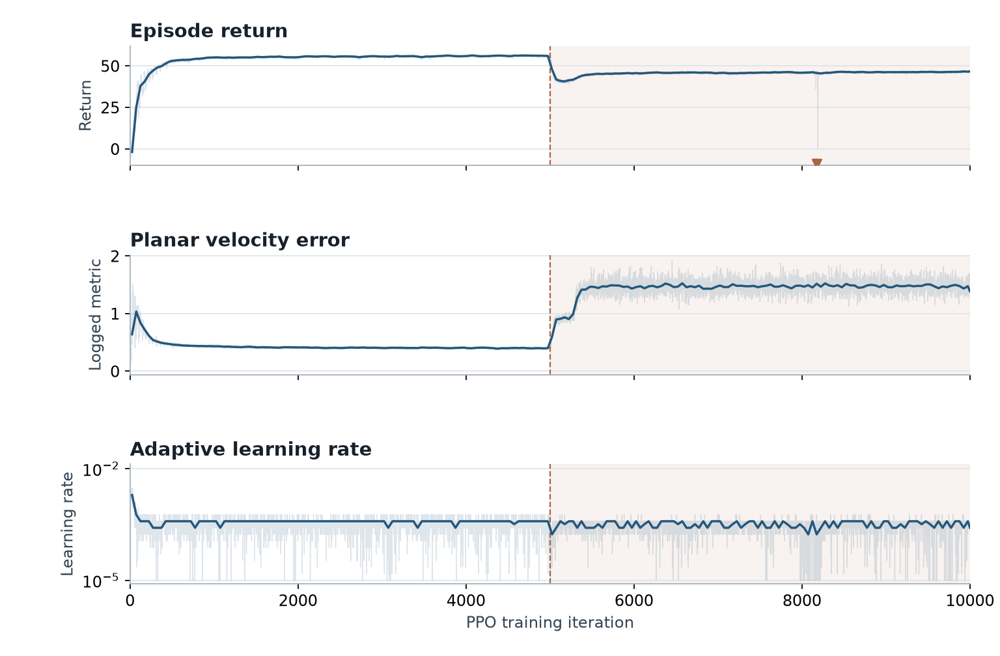
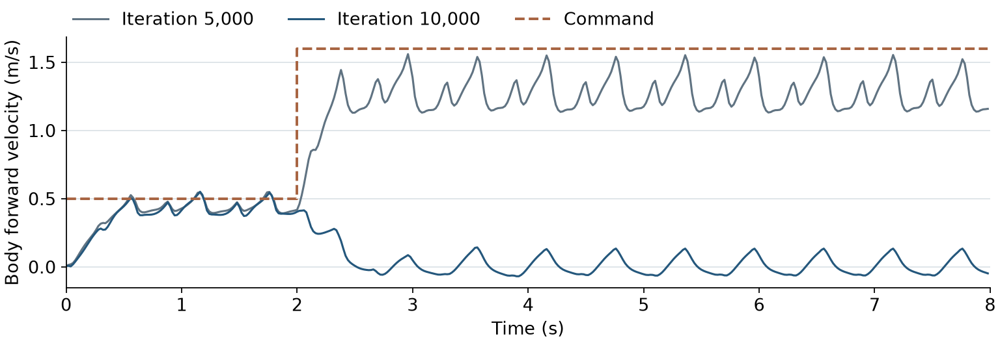
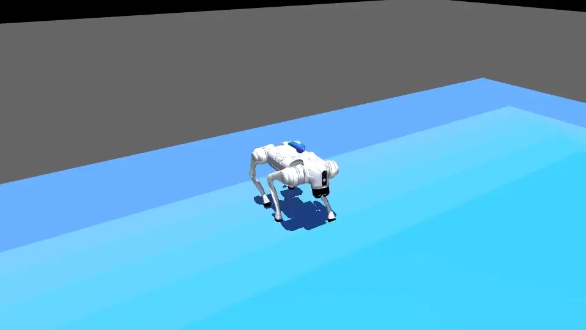
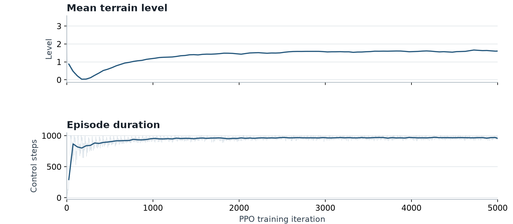
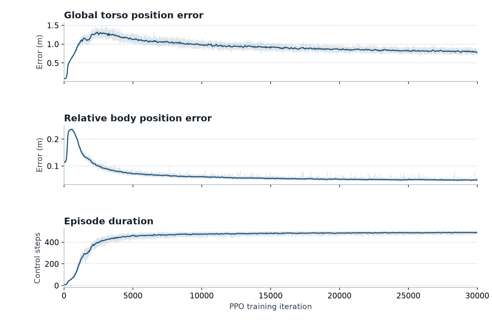

PPO / MuJoCo / Unitree Go2 & G1
机器人强化学习运动控制
我用 PPO 训练了 Go2 平地速度追踪、复杂地形运动和 G1 舞蹈跟踪三项策略。从训练曲线到固定指令回放，对照策略学到了什么、遇到什么困难，以及如何据此修改奖励。
- 训练规模
- 每项任务 4,096 个并行仿真环境，分别保存并回放策略检查点。
- 控制链路
- Actor 输出关节位置偏移，映射为目标关节角，底层 PD 跟踪。
- 时间尺度
- 策略 50 Hz，MuJoCo 200 Hz。每个动作保持 4 个仿真步。
Go2 平地速度追踪
如何将期望机身速度转换成能保持平衡的四足关节动作？ 我训练策略在前进、横移和转向指令下协调四足步态，并通过速度跟踪误差、足端接触和机身姿态分析结果。
速度课程从低速扩展到更宽的指令范围
| 训练阶段 | 前向 vₓ (m/s) | 横向 vᵧ (m/s) | 偏航 ω (rad/s) |
|---|---|---|---|
| 前 5,000 轮 | −0.5 ～ 1.0 | −0.5 ～ 0.5 | −1.0 ～ 1.0 |
| 后 5,000 轮 | −1.0 ～ 2.0 | −1.0 ～ 1.0 | −1.0 ～ 1.0 |

- 切换前后。 回合平均回报从第 4,800–4,999 轮的约 56.0 降到切换后 5,150–5,349 轮的 41.6，第 9,800–9,999 轮回升到 46.5。同期平面速度误差指标约为 0.40、1.03、1.47。
- 怎样读这组曲线。 切换扩大了速度采样范围，同时改变了训练难度。回报部分恢复，但记录到的平面速度误差仍偏高。用同一组指令回放两份检查点，更容易看清哪种速度下的跟踪发生了变化。
同指令回放 · 第 5,000 轮与第 10,000 轮

进一步诊断时，可以固定速度网格、初始姿态与扰动，统计每个速度区间的误差、停滞率和终止率，再按区间选择检查点。
展开技术细节 · Go2 奖励与学习率
主奖励分别评价机身坐标系中的线速度和角速度。两项跟踪权重都是 1，误差增大时奖励按指数衰减。
rv = exp[−(‖vxy − vcmdxy‖² + 2vz²) / 0.25]
rω = exp[−((ωz − ωcmdz)² + 0.05‖ωxy‖²) / 0.5]
- 让速度目标有可行的步态。 步态相位配合足端接触塑造对角步态。脚滑、落地冲击、关节限位及动作变化率各自惩罚不同的控制问题。
- 自适应学习率。 初始 η = 0.001。每个小批次计算旧、新高斯策略的平均 KL 散度。KL > 0.02 时，η′ = max(η / 1.5, 10⁻⁵)；0 < KL < 0.005 时，η′ = min(1.5η, 10⁻²)；其余保持当前值。
- 为什么这样调。 KL 衡量策略分布每次移动的幅度。移动过大时缩小优化步长，变化较小时提高步长。图上是每轮记录的学习率。
Go2 复杂地形运动
面对台阶、坡道和起伏地面，如何利用局部地形信息调整落脚？ 我让 Actor 同时读取本体状态与地形高度扫描。训练覆盖台阶、坡面、随机起伏和波浪地形，用课程学习调整难度。
失败案例 · 台阶地形中的回合终止
高度扫描怎样进入策略



- 17 × 11 网格机身偏航对齐，187 条向下射线
- 187 维高度传感器高度减地面命中点高度，再除以 5 m
- 234 维 Actor 输入与 47 维命令、本体状态及上一步动作拼接
- 12 维动作送入 MLP，输出各关节的位置偏移

奖励设计复盘 · 用局部地面定义离地高度
当前实现 c = ∑ |zfootworld − 0.10 m| · ‖vfoot,xy‖
改进设计 hclear = zfootworld − zground(xfoot, yfoot)
- 现有惩罚将足端世界高度与 0.10 m 比较。在坡面或台阶上，即使脚对局部地面的间隙合适，地面的整体抬高也会改变惩罚。
- 我会用足下射线估计局部地面，以相对离地高度计算摆动相的抬脚代价，并屏蔽未命中射线。台阶边缘可结合预期落脚点检查，避免只测到当前脚下这一侧。
- 验证时固定速度指令、地形与随机种子，用速度误差、绊碰和回合终止次数对照奖励改动。
G1 舞蹈动作跟踪
如何把全身参考动作变成保持平衡、满足接触约束的机器人运动？ 我训练 29 关节的 G1 按参考动作跟踪。策略每 20 ms 读取当前参考和本体状态，再输出一组关节目标偏移。
全局位姿与相对动作分别评分
- 整体位置和朝向。 用世界坐标下 torso 锚点的位置误差、旋转角误差约束整体运动，每项权重 0.5，位置和角度尺度分别为 0.3 m 和 0.4 rad。
- 肢体构型。 将参考动作按实际 torso 的水平位置与偏航对齐，保留参考高度，再比较 14 个身体部位的位姿。相对位置和朝向各权重 1.0。这样机器人整体偏了一点时，仍能评价手脚动作是否正确。
- 运动节奏。 额外跟踪身体部位的世界线速度和角速度，各权重 1.0。动作变化、越限和自碰撞作为正则项。
全局位置 rroot = exp(−‖ptorso − preftorso‖² / 0.3²)
相对位置 rbody = exp(− meani‖pi − paligned refi‖² / 0.3²)

展开技术细节 · RSI、自适应采样与参考动作
- RSI。 从采样到的参考帧初始化根部与关节位置、速度，并加入小扰动。策略能从舞蹈中段练起。
- Adaptive sampling。 按时间段统计训练终止，对失败频率做指数滑动更新，作为采样权重。加上均匀项让其他时间段仍有被采到的机会。
- 运动重定向。 这次训练从已经匹配 G1 关节的参考轨迹开始。项目中的 CSV 转 NPZ 完成时间重采样和正运动学，生成训练使用的关节与身体部位状态。人体到 G1 的映射属于上游动作准备。
三项任务的技术定位
三项策略共用 PPO 和关节位置控制链路。主要区别在于任务指令、姿态或地形观测，以及评价策略表现的方式。
| 对比维度 | Go2 平地速度 | Go2 复杂地形 | G1 舞蹈跟踪 |
|---|---|---|---|
| 控制问题 | 按期望速度移动并稳定机身 | 跟踪速度并适应局部高差 | 按参考节奏协调全身动作 |
| Actor 输入 → 输出 | 47 → 12 角速度、重力投影、指令、相位与关节状态 | 234 → 12 平地观测 + 187 维地形扫描 | 154 → 29 58 维参考关节状态 + 相对朝向、本体观测 |
| Critic 输入 → 输出 | 74 → 1 额外 27 维基座速度与足端状态 | 261 → 1 同样额外 27 维，保留高度扫描 | 286 → 1 额外 132 维锚点位置、机身线速度及 14 个身体部位位姿 |
| 动作映射 | 12 个关节，统一缩放 0.25 | 12 个关节，统一缩放 0.25 | 29 个关节，按关节配置不同缩放 |
| 训练难度 | 5,000 轮后扩大线速度范围 | 按完成距离升降地形等级 | RSI 初始化 + 失败驱动的时间段采样 |
| 训练与回放证据 | 切换前后日志、同指令检查点对照 | 地形课程、真实射线输入与落脚案例 | 全局与相对误差、参考姿态叠影 |
共同的控制与训练设计
- 非对称 Actor–Critic。 Actor 的输出是动作分布，策略回放用其确定性动作。Critic 用额外的仿真状态估计一个标量价值，帮助计算优势。
- 从动作到关节角。 每个关节 qdes = qdefault + s·a。Go2 每单位动作对应 0.25 rad 的目标偏移。G1 按 sj = 0.25·τmax,j/Kp,j 设置逐关节缩放，例如膝关节约 0.351 rad、髋俯仰约 0.548 rad。仿真送入执行器时再扣除随机编码器偏置。PD 在 5 ms 物理步内持续跟踪 20 ms 更新一次的目标。
- 域随机化。 启动时随机化足端摩擦、编码器偏置和基座质心，回合中施加速度扰动。Go2 足端摩擦采样为 0.3–1.6，G1 为 0.3–1.2。它们分别覆盖接触条件、测量偏差、质量分布与外部扰动。